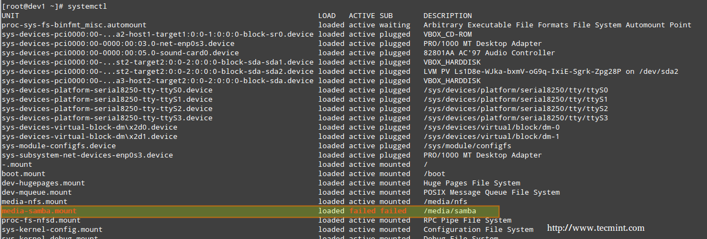
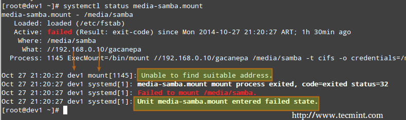
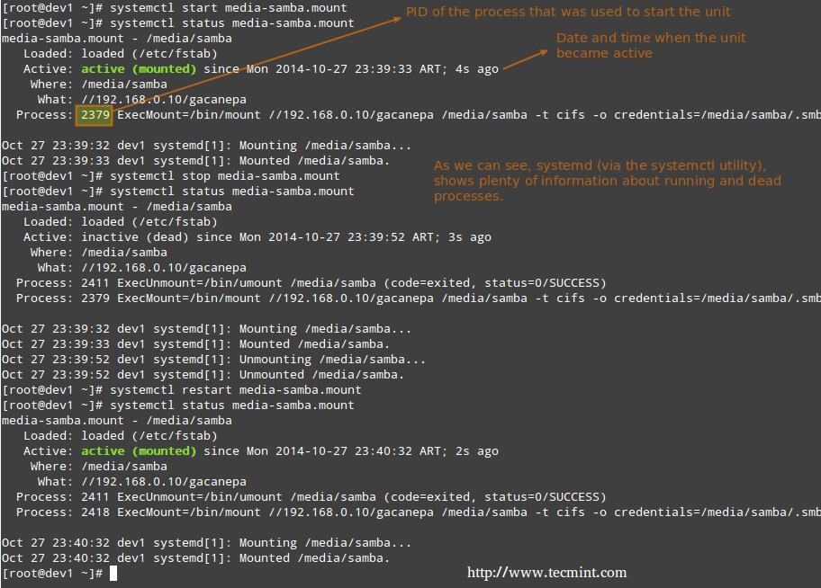
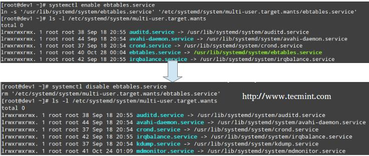

编译自：http://www.tecmint.com/linux-boot-process-and-manage-services/
作者： Gabriel Cánepa
原创：LCTT https://linux.cn/article-7365-1.html
译者： ictlyh
本文地址：https://linux.cn/article-7365-2.html
systemd 是另外一个被多种主流 Linux 发行版采用的服务和系统管理器。它的目标是允许系统启动时多个任务尽可能并行（而 sysvinit 并非如此，sysvinit 一般比较慢，因为它每次只启动一个进程，而且会检查彼此之间是否有依赖，在启动其它服务之前还要等待守护进程启动），充当运行中系统动态资源管理的角色。
因此，服务只在需要的时候启动，而不是系统启动时毫无缘由地启动（为了防止消耗系统资源）。
要查看你系统中运行的原生 systemd 服务和 Sysv 服务，可以用以下的命令。
# systemctl

查看运行中的进程
LOAD 一列显示了单元（UNIT 列，显示服务或者由 systemd 维护的其它进程）是否正确加载，ACTIVE 和 SUB 列则显示了该单元当前的状态。
显示服务当前状态的信息
当 ACTIVE 列显示某个单元状态并非活跃时，我们可以使用以下命令查看具体原因。
# systemctl status [unit]
例如，上图中 media-samba.mount 处于失败状态。我们可以运行：
# systemctl status media-samba.mount

查看服务状态
我们可以看到 media-samba.mount 失败的原因是 host dev1 上的挂载进程无法找到 //192.168.0.10/gacanepa 上的共享网络。
一旦 //192.168.0.10/gacanepa 上的共享网络可用，我们可以再来尝试启动、停止以及重启 media-samba.mount 单元。执行每次操作之后，我们都执行 systemctl stats media-samba.mout 来查看它的状态。
# systemctl start media-samba.mount# systemctl status media-samba.mount# systemctl stop media-samba.mount# systemctl restart media-samba.mount# systemctl status media-samba.mount

启动停止服务
启用或停用某服务随系统启动
使用 systemd 你可以在系统启动时启用或停用某服务
# systemctl enable [service] # 启用服务# systemctl disable [service] # 阻止服务随系统启动
启用或停用某服务随系统启动包括在 /etc/systemd/system/multi-user.target.wants 目录添加或者删除符号链接。

启用或停用服务
你也可以用下面的命令查看某个服务的当前状态（启用或者停用）。
# systemctl is-enabled [service]
例如，
# systemctl is-enabled postfix.service
另外，你可以用下面的命令重启或者关闭系统。
# systemctl reboot# systemctl shutdown
基于事件的 Upstart 是 /sbin/init 守护进程的替代品，它仅为在需要那些服务的时候启动服务而生，（或者当它们在运行时管理它们），以及处理发生的实践，因此 Upstart 优于基于依赖的 sysvinit 系统。
一开始它是为 Ubuntu 发行版开发的，但在红帽企业版 Linux 6.0 中得到使用。尽管希望它能在所有 Linux 发行版中替代 sysvinit，但它已经被 systemd 超越。2014 年 2 月 14 日，Mark Shuttleworth（Canonical Ltd. 创建者）发布声明之后的 Ubuntu 发行版采用 systemd 作为默认初始化守护进程。
由于 Sysv 启动脚本已经流行很长时间了，很多软件包中都包括了 Sysv 启动脚本。为了兼容这些软件， Upstart 提供了兼容模式：它可以运行保存在常用位置（/etc/rc.d/rc?.d, /etc/init.d/rc?.d, /etc/rc?.d或其它类似的位置）的Sysv 启动脚本。因此，如果我们安装了一个还没有 Upstart 配置脚本的软件，仍然可以用原来的方式启动它。
另外，如果我们还安装了类似 chkconfig 的工具，你还可以和在基于 sysvinit 的系统中一样用它们管理基于 Sysv 的服务。
Upstart 脚本除了支持 Sysv 启动脚本，还支持基于多种方式启动或者停用服务；例如， Upstart 可以在一个特定硬件设备连接上的时候启动一个服务。
使用 Upstart以及它原生脚本的系统替换了 /etc/inittab 文件和 /etc/init 目录下和运行等级相关的以 .conf 作为后缀的 Sysv 启动脚本目录。
这些 *.conf 脚本（也称为任务定义）通常包括以下几部分：
例如，
# My test service - Upstart script demo description "Here goes the description of 'My test service'" author "Dave Null <dave.null@example.com>"# Stanzas## Stanzas define when and how a process is started and stopped# See a list of stanzas here: http://upstart.ubuntu.com/wiki/Stanzas#respawn# When to start the servicestart on runlevel [2345]# When to stop the servicestop on runlevel [016]# Automatically restart process in case of crashrespawn# Specify working directorychdir /home/dave/myfiles# Specify the process/command (add arguments if needed) to runexec bash backup.sh arg1 arg2
要使更改生效，你要让 upstart 重新加载它的配置文件。
# initctl reload-configuration
然后用下面的命令启动你的任务。
$ sudo start yourjobname
其中 yourjobname 是之前 yourjobname.conf 脚本中添加的任务名称。
关于 Upstart 更完整和详细的介绍可以参考该项目网站的 “Cookbook” 栏目。
了解 Linux 启动进程对于你进行错误处理、调整计算机系统以及根据需要运行服务非常有用。
在这篇文章中，我们分析了你按下电源键启动机器的一刻到你看到完整的可操作用户界面这段时间发生了什么。我希望你能像我一样把它们放在一起阅读。欢迎在下面留下你的评论或者疑问。我们总是期待听到读者的回复。
via: http://www.tecmint.com/linux-boot-process-and-manage-services/
作者：Gabriel Cánepa 译者：ictlyh 校对：wxy
编译自：http://www.tecmint.com/linux-boot-process-and-manage-services/
作者： Gabriel Cánepa
原创：LCTT https://linux.cn/article-7365-1.html
译者： ictlyh
本文由 LCTT 原创翻译，Linux中国首发。也想加入译者行列，为开源做一些自己的贡献么？欢迎加入 LCTT！
翻译工作和译文发表仅用于学习和交流目的，翻译工作遵照 CC-BY-NC-SA 协议规定，如果我们的工作有侵犯到您的权益，请及时联系我们。
欢迎遵照 CC-BY-NC-SA 协议规定转载，敬请在正文中标注并保留原文/译文链接和作者/译者等信息。
文章仅代表作者的知识和看法，如有不同观点，请楼下排队吐槽 :D
Linux.CN © 2003-2016 Linux中国 | Powered by DX | 图片存储于七牛云存储
京ICP备05083684号-1 京公网安备110105001595
服务条款 | 除特别申明外，本站原创内容版权遵循 CC-BY-NC-SA 协议规定


分享到微信朋友圈
打开微信，点击底部的“发现”，
使用“扫一扫”将网页分享至朋友圈。